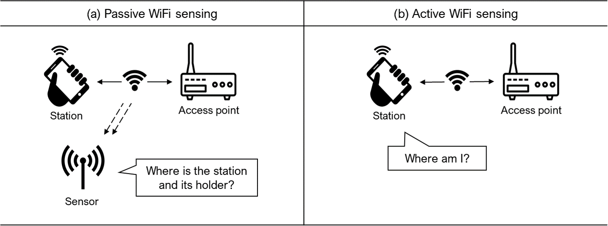

4 Data Collection Insights
4.1 Understanding WiFi Sensing Types
WiFi, a technology for wireless networking based on IEEE 802.11 standards, can be used to measure people’s location and behavior through two main approaches: passive and active WiFi sensing.

Passive WiFi sensing is a receive-only system that captures WiFi packets emitted from WiFi-enabled devices carried by individuals. It focuses on answering “Where is the station and its holder?” without requiring active participation from the person. Sensors (sniffers) or access points (APs) detect WiFi packets sent from nearby devices, which regularly emit WiFi packets to discover nearby APs, even when not connected (Bonné et al., 2013; Musa & Eriksson, 2012). The typical detection range is approximately 100 meters, considering commercial sensor specifications and WiFi device transmission range (Chilipirea, 2019).
On the other hand, active WiFi sensing is a geolocation system that uses WiFi packets from nearby APs to determine the location of a device. It focuses on answering “Where am I?” from the device’s perspective. The device scans for nearby WiFi APs and saves received packets, which are then sent to a server for location estimation and transmitted back to the device. Active sensing requires user consent and active participation, such as installing an application to collect and send WiFi logs.
Passive Sensing for Pedestrian Behavior Monitoring
This book focuses on passive WiFi sensing for studying pedestrian behavior in urban environments. As illustrated in Figure 6-1, passive sensing aims to answer the question “Where is the station and its holder?” without requiring active participation from individuals. This approach is particularly suitable for urban planning and research, where it is impractical to ask for consent from the numerous pedestrians using public spaces.
Passive sensing offers a non-intrusive and scalable method for gathering data on pedestrian behavior by capturing the WiFi packets emitted by devices carried by pedestrians. This data provides valuable insights into pedestrian movement patterns, space utilization, and social interactions in urban environments, enabling better planning, design, and management of public spaces. In contrast, active sensing focuses on answering “Where am I?” from the device’s perspective, which requires user consent and active participation. While active sensing allows for richer data on people’s mobility, it is less practical for large-scale pedestrian behavior monitoring in urban environments.
However, it is essential to consider the limitations, privacy concerns, and ethical implications of passive WiFi sensing. While individuals are not actively providing information, the collection of WiFi packets from their devices may still raise privacy concerns. Researchers should ensure that the data collection process is transparent, secure, and complies with relevant privacy regulations.
4.2 Sensor Installation Strategies
One of the most convenient and discreet ways to install WiFi sensors outdoors is by attaching them to existing street furniture, such as trees or lampposts. Make sure to use waterproof enclosures and secure the sensors firmly to minimize the risk of damage from weather conditions or tampering. This approach allows you to leverage existing infrastructure in the urban environment while keeping the sensors out of sight. Figure 6-2 shows an example of a sensor attached to a lamppost.
4.3 Sensor Placement Strategies
To optimize coverage and minimize signal interference, consider the following strategies when deciding where to place your WiFi sensors:
- Single street coverage: If your target area is a single street, place sensors at both ends and a few in the middle to ensure adequate coverage along the entire length of the street.
- District-wide coverage: When monitoring a larger area such as a district, position sensors at intersections to maximize coverage and capture pedestrian movement patterns between different streets and areas.
- Avoiding interference: Steer clear of areas with high levels of electromagnetic interference, such as electrical equipment or large metal structures, to maintain signal quality and reliability.
- Indoor considerations: When installing sensors indoors, account for signal attenuation caused by walls and other obstacles, as this can affect the range and accuracy of the sensors.
- Outdoor protection: In outdoor environments, minimize the impact of weather conditions by shielding sensors from direct exposure to rain, snow, or extreme temperatures.
- Accessibility and security: Place sensors in locations that are easily accessible for maintenance and troubleshooting, while also ensuring the security of the sensors to prevent tampering or damage.
4.4 Optimizing Sensor Density for Accuracy
The number and density of sensors play a crucial role in determining the accuracy and reliability of the WiFi sensing system. While a higher number of sensors generally leads to improved accuracy, it is essential to strike a balance between performance and practical considerations, such as cost and maintenance.
As a general guideline for outdoor deployments, aim to install sensors at intervals of approximately 100 meters. This means placing one sensor for every 100 meters of the target area. While more sensors can enhance accuracy, this spacing has been found to provide a good balance between performance and resource efficiency based on experimental results.
Detailed Experiment on Sensor Density (click to expand)
A study conducted in the central street of the University of Ulsan retail district tested the effects of sensor density on localization performance and the number of detected samples. The study created scenarios with varying sensor densities (Table 6-1) and found that lower sensor density led to poorer localization performance (Figure 6-3) and a decreased percentage of detected samples (Figure 6-4).
Table 6-1. Description of scenarios based on sensor locations and counts
Scenario Number of locations Number of sensors Average distance Description Baseline 7 8 53.6m Default experiment setting Scenario 1 4 5 107m Removes 3 locations Scenario 2 3 3 161m Removes 1 location Scenario 3 2 2 322m Removes 1 location Figure 6-3. Localization performance by scenario (30 seconds sampling time) Figure 6-4. Localization error and number of samples used by scenario when localized to 30 seconds of sampling
By following these sensor installation tips and strategies, even those new to WiFi sensing can effectively deploy sensors for pedestrian behavior monitoring, ensuring high-quality data collection and accurate localization performance. Remember, the key is to find the right balance between sensor density, placement, and practical considerations to create a reliable and efficient WiFi sensing system.